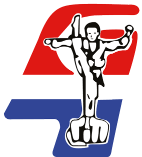

Haarlem with its many historic buildings and beautiful old squares lies near the beach on the banks of the Spaarne river. It is wonderful to stroll through the narrow streets lined by the monumental buildings built by master Lieven de Key.
-
Taekwondo Bond
With our training we want to train teachers and assistants who can convey Taekwondo and related self-defense methods and systems in a safe, responsible and inspiring way, can teach them and guide and support practitioners in their sporting and personal development.
 -
Hwa-Rang Dragon
Whichever branch of martial art you choose with us, we always strive for a balanced curriculum full of challenges. The more balanced the challenge, the more fun it is to continue! You can flow in whenever you want, at any level!
-
Kinheim
Kinheim wants to be the close-knit and social baseball and softball club where top sport and recreational sport reinforce each other. And as an association full of ideas, initiatives and sporting ambition, we needed a plan to bring things together and start working structurally on achieving our goals. This is the reason that we have made a Policy Plan 2020.
-
Scopo Atletico
Scopo Atletico wants to stimulate a pleasant exercise climate by broadly developing various target groups on the basis of our 3 pillars (MIND, MOVEMENT, MOTIVATION), both mentally and physically, so that they bring out the best in themselves and others.
-
AV Haarlem
AV Haarlem is an athletic sports club with all sorts of activity for everyone. It mainly revolves around running.Feel free to come and see how things work out on such a training. You can train twice for free to see if this is a sport that suits you. If the 'test run' is satisfactory, take a registration form with you (located in the canteen) and we welcome you as a new member of AV Haarlem.
-
H.C Haarlem
We have three artificial grass hockey pitches. Our main field (right in front of the clubhouse) is a water artificial grass field. This field has been there since September 2016. The other two fields are sand-strewn artificial grass pitches. The artificial grass field of the korfball club is also lined as a hockey field.
-
FIVE21
TeamFive21 is committed to the continuous physical and mental development of every athlete and coach by offering high-quality lessons and a community-oriented policy.

-
Onze Gezellen
The baseball and softball club Onze Gezellen.For the coming years, the policy plan is aimed at allowing both the first baseball and softball team to participate in the Topsport competitions, further improvement of the youth education to achieve the flow to the selections and, last but not least, to further optimize the club feeling.
-
H.K.C Haarlem
Hkc Haarlem is the oldest and largest korfball club in Haarlem with a rich tradition, since May 2014 we are more than 100 years old. We are currently playing with 16 teams (3 senior, 1 recreational and 12 youth teams). At HKC Haarlem we not only play korfball, but we also pay a lot of attention to an active club life.
-
Haarlem-Kennemerland
Haarlem-Kennemerland Football Club is a young and thriving football club, founded in 2010. We play football on the old Haarlem complex on the Sportweg. We think it is important to deliver good sporting performance, but more important that we are a well-kept and committed association, where every member enjoys playing football.